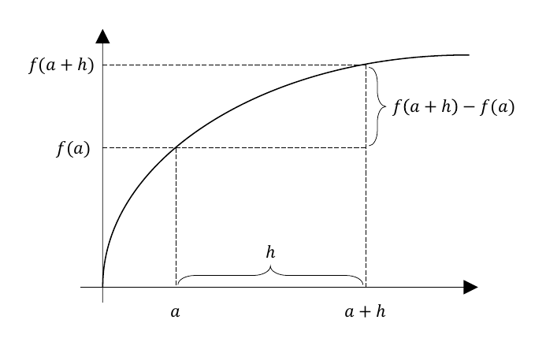
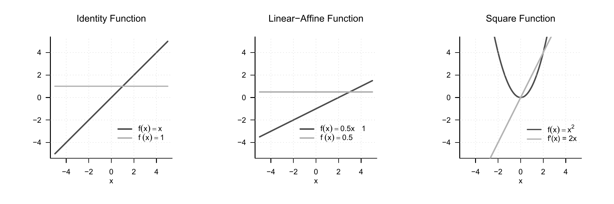
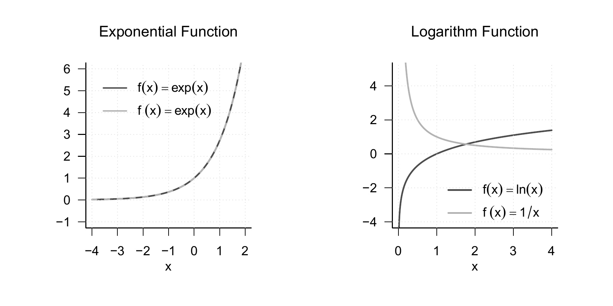
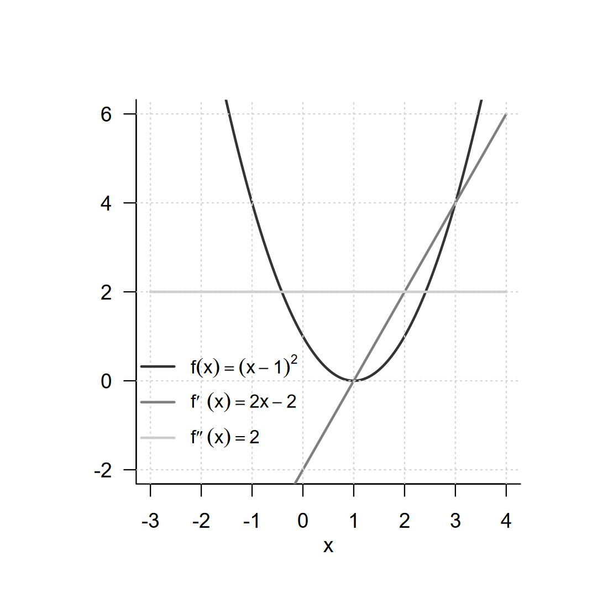
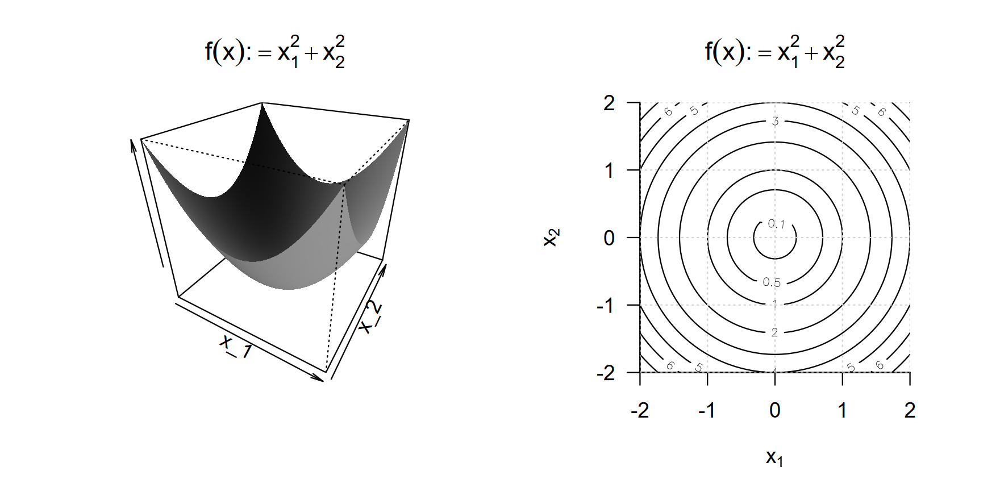
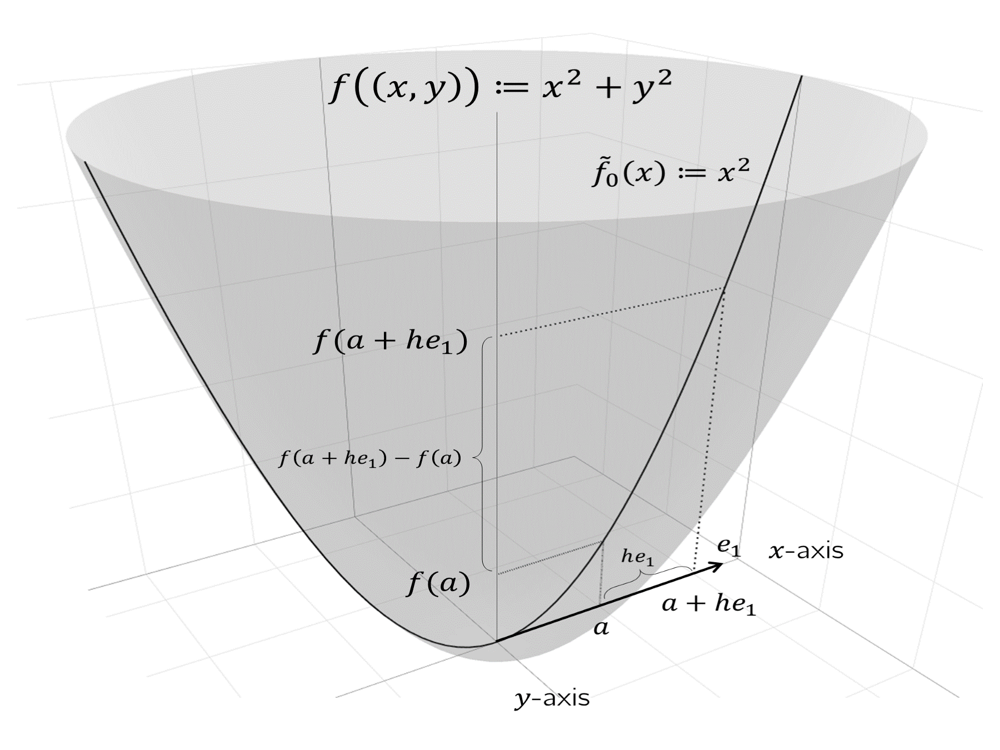
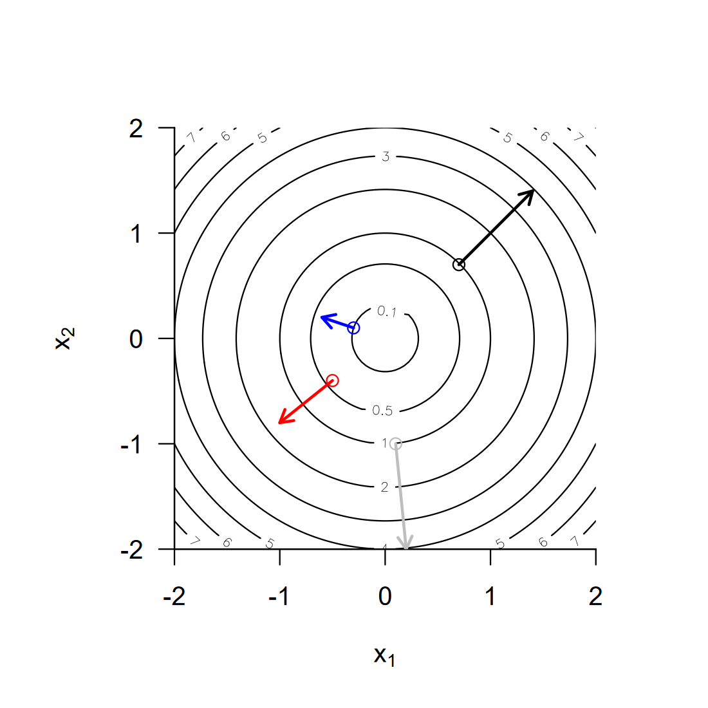

| Name | Definition | Derivative |
|---|---|---|
| Polynomial function | \(f(x) := \sum_{i=0}^k a_ix^i\) | \(f'(x) = \sum_{i=1}^k ia_ix^{i-1}\) |
| Constant function | \(f(x) := a\) | \(f'(x) = 0\) |
| Identity function | \(f(x) := x\) | \(f'(x) = 1\) |
| Linear-affine function | \(f(x) := ax + b\) | \(f'(x) = a\) |
| Square function | \(f(x) := x^2\) | \(f'(x) = 2x\) |
| Exponential function | \(f(x) := \exp(x)\) | \(f'(x) = \exp(x)\) |
| Logarithm function | \(f(x) := \ln(x)\) | \(f'(x) = \frac{1}{x}\) |
6 Differential calculus
Differential calculus is concerned with the change of functions. On the one hand, it provides the basis for the mathematical modelling of dynamic systems by means of differential equations, that is, the description of functions in terms of their rates of change. On the other hand, differential calculus provides the basis of optimization, that is, of determining extrema of functions. In Section 6.1 we first introduce the concept of the derivative and elementary calculation rules associated with it. In Section 6.2 we then turn to the question of how derivatives can be used to determine extrema of functions.
6.1 Definitions and calculation rules
We begin with the following definition.
Definition 6.1 (Differentiability and derivative) Let \(I \subseteq \mathbb{R}\) be an interval and let \[\begin{equation} f:I \to \mathbb{R}, x \mapsto f(x) \end{equation}\] be a univariate real-valued function. \(f\) is called differentiable at \(a \in I\) if the limit \[\begin{equation} f'(a) := \lim_{h\to 0} \frac{f(a+h)-f(a)}{h} \end{equation}\] exists. \(f'(a)\) is then called the derivative of \(f\) at the point \(a\). If \(f\) is differentiable for all \(x \in I\), then \(f\) is called differentiable, and the function \[\begin{equation} f' : I \to \mathbb{R}, x \mapsto f'(x) \end{equation}\] is called the derivative of \(f\).
For \(h>0\), the expression \[\begin{equation} \frac{f(a+h)-f(a)}{h} \end{equation}\] is called the Newton difference quotient. As shown in Figure 6.1, the Newton difference quotient measures the change \(f(a+h)-f(a)\) of \(f\) on the \(y\)-axis per distance \(h\) on the \(x\)-axis. If, for example, \(f(a)\) and \(f(a+h)\) represent the position of an object at a time \(a\) and at a later time \(a+h\), then \(f(a+h)-f(a)\) is the distance travelled by this object in the time \(h\), that is, its average velocity over the time interval \(h\). For \(h\to 0\), the Newton difference quotient then measures the instantaneous rate of change of \(f\) at \(a\), in this example the velocity of the object at time \(a\).

From a mathematical point of view, it is important to distinguish between the symbols \(f'(a)\) and \(f'\) in the definition of the derivative. As usual, \(f'(a)\) denotes the value of a function, that is, a number. In contrast, \(f'\) denotes a function, namely the function whose values are given by \(f'(a)\) for all \(a \in \mathbb{R}\).
Several historically established notations for derivatives exist in the literature; all of them represent the same concept of the derivative.
Definition 6.2 (Notation for derivatives of univariate real-valued functions) Let \(f\) be a univariate real-valued function. Equivalent notations for the derivative of \(f\) and the derivative of \(f\) at a point \(x\) are
the Lagrange notation \(f'\) and \(f'(x)\),
the Leibniz notation \(\frac{df}{dx}\) and \(\frac{df(x)}{dx}\),
the Newton notation \(\dot{f}\) and \(\dot{f}(x)\),
the Euler notation \(Df\) and \(Df(x)\).
In the following, for univariate real-valued functions we will mainly use the Lagrange notation \(f'\) and \(f'(x)\) as labels. In calculations, we also use an adapted form of Leibniz notation and understand the expression \(\frac{d}{dx}f(x)\) as the instruction to compute the derivative of \(f\). Newton notation is used mainly when the function argument represents time and is then usually denoted by \(t\) for time. Accordingly, \(\dot{f}(t)\) denotes the rate of change of \(f\) at time \(t\). Euler notation is particularly useful in the context of multivariate real-valued or vector-valued functions.
We assume a number of derivatives of elementary functions to be known; these are summarized in Table 6.1. For proofs, we refer to the advanced literature.
In Figure 6.2 we visualize the identity function, a linear function, and the square function together with their respective derivatives. In Figure 6.3 we visualize the exponential and logarithm functions together with their respective derivatives.


Based on the definition of the derivative of a univariate real-valued function, further derivatives of such a function can be defined easily.
Definition 6.3 (Higher derivatives) Let \(f\) be a univariate real-valued function and let \[\begin{equation} f^{(1)} := f' \end{equation}\] be the derivative of \(f\). The \(k\)th derivative of \(f\) is defined recursively by \[\begin{equation} f^{(k)} := \left(f^{(k-1)}\right)' \mbox{ for } k > 1, \end{equation}\] assuming that \(f^{(k-1)}\) is differentiable. In particular, the second derivative of \(f\) is defined as the derivative of \(f'\), that is, \[\begin{equation} f'' := (f')'. \end{equation}\]
In analogy to the above, in calculations we also write \(\frac{d^2}{dx^2}f(x)\) for the instruction to determine the second derivative of a function \(f\). The zeroth derivative \(f^{(0)}\) of \(f\) is \(f\) itself. By tradition and for simplicity, for \(k < 4\) one usually writes \(f',f''\), and \(f'''\) according to Lagrange notation instead of \(f^{(1)}, f^{(2)}\), and \(f^{(3)}\).
Example
Let \[\begin{equation} f: \mathbb{R} \to \mathbb{R}, x \mapsto f(x) := x^2. \end{equation}\] Then \[\begin{equation} f^{(1)}(x) = f'(x) = \frac{d}{dx}\left(x^2\right) = 2x. \end{equation}\] Furthermore, \[\begin{align} \begin{split} f^{(2)}(x) = \left(f^{(2-1)}\right)'(x) = \left(f^{(1)}\right)'(x) & = \frac{d}{dx}(2x) = 2, \\ f^{(3)}(x) = \left(f^{(3-1)}\right)'(x) = \left(f^{(2)}\right)'(x) & = \frac{d}{dx}(2) = 0, \\ f^{(4)}(x) = \left(f^{(4-1)}\right)'(x) = \left(f^{(3)}\right)'(x) & = \frac{d}{dx}(0) = 0. \end{split} \end{align}\] Thus, throughout this calculation, one computes only first derivatives.
A number of calculation rules are helpful for determining the derivative of a function because they allow the derivative of a function to be derived from the derivatives of its subfunctions. For proofs of the calculation rules introduced in the following theorem, we refer to the advanced literature.
Theorem 6.1 (Calculation rules for derivatives) For \(i = 1,...,n\), let \(g_i\) be real-valued univariate differentiable functions. Then the following calculation rules hold:
Sum rule \[\begin{equation} \mbox{For } f(x) := \sum_{i=1}^n g_i(x) \mbox{, } f'(x) = \sum_{i=1}^n g_i'(x). \end{equation}\]
Product rule \[\begin{equation} \mbox{For } f(x) := g_1(x)g_2(x) \mbox{, } f'(x) = g_1'(x)g_2(x) + g_1(x)g_2'(x). \end{equation}\]
Quotient rule \[\begin{equation} \mbox{For } f(x) := \frac{g_1(x)}{g_2(x)} \mbox{, } f'(x) = \frac{g_1'(x)g_2(x) - g_1(x)g_2'(x)}{g_2^2(x)}. \end{equation}\]
Chain rule \[\begin{equation} \mbox{For } f(x) := g_1(g_2(x)) \mbox{, } f'(x) = g_1'(g_2(x))g'_2(x). \end{equation}\]
Examples
(1) Sum rule
Let \[\begin{equation} f: \mathbb{R} \to \mathbb{R}, x \mapsto f(x) := 4x^3 + 3x^2. \end{equation}\] Then \(f\) has the form \[\begin{equation} f(x) = \sum_{i=1}^2 g_i(x) = g_1(x) + g_2(x) \mbox{ with } g_1(x) := 4x^3 \mbox{ and } g_2(x) := 3x^2. \end{equation}\] Moreover, \[\begin{equation} g_1'(x) = \frac{d}{dx}\left(4x^3\right) = 12x^2 \mbox{ and } g_2'(x) = \frac{d}{dx}\left(3x^2\right) = 6 x. \end{equation}\] Thus, by the sum rule, \[\begin{equation} f'(x) = \sum_{i=1}^2 g_i'(x) = g_1'(x) + g_2'(x) = 12x^2 + 6x. \end{equation}\]
(2) Product rule
Let \[\begin{equation} f:\mathbb{R} \to \mathbb{R}, x \mapsto f(x) := x^2 \sin(x). \end{equation}\] Then \(f\) has the form \[\begin{equation} f(x) = g_1(x)g_2(x) \mbox{ with } g_1(x) := x^2 \mbox{ and } g_2(x) := \sin(x). \end{equation}\] Moreover, \[\begin{equation} g_1'(x) = \frac{d}{dx}\left(x^2\right) = 2x \mbox{ and } g_2'(x) = \frac{d}{dx}\left(\sin x\right) = \cos(x). \end{equation}\] Thus, by the product rule, \[\begin{equation} f'(x) = g_1'(x)g_2(x) + g_1(x)g_2'(x) = 2x\sin(x) + x^2\cos(x). \end{equation}\]
(3) Quotient rule
Let \[\begin{equation} f:\mathbb{R} \to \mathbb{R}, x \mapsto f(x) := \frac{x^2}{x+1}. \end{equation}\] Then \(f\) has the form \[\begin{equation} f(x) = \frac{g_1(x)}{g_2(x)} \mbox{ with } g_1(x) := x^2 \mbox{ and } g_2(x) := x+1. \end{equation}\] Moreover, \[\begin{equation} g_1'(x) = \frac{d}{dx}\left(x^2\right) = 2x \mbox{ and } g_2'(x) = \frac{d}{dx}\left(1 + x \right) = 1. \end{equation}\] Thus, by the quotient rule, \[\begin{equation} f'(x) = \frac{g_1'(x)g_2(x) - g_1(x)g_2'(x)}{g_2^2(x)} = \frac{2x(x+1)-x^2}{(x+1)^2} = \frac{2x^2 + 2x - x^2}{(x+1)^2} = \frac{x^2 + 2x}{(x+1)^2}. \end{equation}\]
(4) Chain rule
Let \[\begin{equation} f : \mathbb{R} \to \mathbb{R}, x \mapsto f(x) := \exp\left(-x^2\right). \end{equation}\] Then \(f\) has the form \[\begin{equation} f(x) = g_1(g_2(x)) \mbox{ with } g_1(x) := \exp(x) \mbox{ and } g_2(x) := -x^2. \end{equation}\] Moreover, \[\begin{equation} g_1'(x) = \frac{d}{dx}\left(\exp(x)\right) = \exp(x) \mbox{ and } g_2'(x) = \frac{d}{dx}\left(-x^2\right) = -2x. \end{equation}\] Thus, by the chain rule, \[\begin{equation} f'(x) = g_1'(g_2(x))g_2'(x) = \exp\left(-x^2\right)\left(-2x\right) = -2x\exp\left(-x^2 \right). \end{equation}\] One can therefore remember the derivative resulting from the chain rule as: “The derivative of the outer function at the value of the inner function times the derivative of the inner function.”
6.2 Analytic optimization
An important application of differential calculus is the determination of extrema of functions. At its core, this concerns the question for which values in its domain a function assumes a maximum or a minimum. For simple functions this is possible analytically. The general procedure is often also known under the keyword “curve sketching”. In applications, an analytic approach to optimizing functions is usually not possible, and numerical algorithms are used to determine extrema. Understanding these algorithms, however, presupposes an understanding of the principles of analytic optimization. In this section, we give an introduction to analytic optimization of univariate real-valued functions. We begin by making precise the concepts of maxima and minima of univariate real-valued functions mentioned above.
Definition 6.4 (Extreme points and extreme values) Let \(U \subseteq \mathbb{R}\) and let \(f : U \to \mathbb{R}\) be a univariate real-valued function. \(f\) has at the point \(x_0 \in U\)
- a local minimum if there is an interval \(I := ]a,b[\) with \(x_0 \in ]a,b[\) and \[\begin{equation} f(x_0) \le f(x) \mbox{ for all } x\in I\cap U, \end{equation}\]
- a global minimum if \[\begin{equation} f(x_0) \le f(x) \mbox{ for all } x\in U, \end{equation}\]
- a local maximum if there is an interval \(I := ]a,b[\) with \(x_0 \in ]a,b[\) and \[\begin{equation} f(x_0) \ge f(x) \mbox{ for all } x\in I\cap U, \end{equation}\]
- a global maximum if \[\begin{equation} f(x_0) \ge f(x) \mbox{ for all } x\in U. \end{equation}\]
The value \(x_0 \in U\) of the domain of \(f\) is called, respectively, a local or global minimizer or maximizer, and the function value \(f(x_0) \in \mathbb{R}\) is called, respectively, a local or global minimum or maximum. In general, the value \(x_0 \in U\) is called an extreme point, and the function value \(f(x_0) \in \mathbb{R}\) is called an extreme value.
Extreme points of functions are often denoted by \[\begin{equation} \underset{x \in I \cap U}{\operatorname{argmin}} f(x) \mbox{ or } \underset{x \in I \cap U}{\operatorname{argmax}} f(x), \end{equation}\] and extreme values of functions are often denoted by \[\begin{equation} \min_{x \in I \cap U} f(x) \mbox{ or } \max_{x \in I \cap U} f(x). \end{equation}\] Figure 6.4 visualizes the different types of extreme values according to Definition 6.4.
Analytic optimization of univariate real-valued functions is based on the so-called necessary and sufficient conditions for extrema. The former makes a statement about the behavior of the first derivative of a function at an extreme point; the latter makes a statement about the behavior of a function at a point that satisfies certain requirements on its first and second derivatives.

Theorem 6.2 (Necessary condition for extrema) Let \(f\) be a univariate real-valued function that is differentiable in a neighborhood of \(x_0\). If \(x_0\) is an interior extreme point of \(f\), then \[\begin{equation} x_0 \mbox{ is an interior extreme point of } f \Rightarrow f'(x_0) = 0. \end{equation}\]
If \(x_0\) is an interior extreme point of \(f\), then the first derivative of \(f\) at \(x_0\) is therefore equal to zero. Instead of giving a proof, let us reason that, for example, at a local maximizer \(x_0\) of \(f\), \(f\) increases to the left of \(x_0\) and decreases to the right of \(x_0\). At \(x_0\), however, \(f\) neither increases nor decreases, so it is plausible that \(f'(x_0) = 0\).
Theorem 6.3 (Sufficient conditions for local extrema) Let \(f\) be a twice differentiable univariate real-valued function.
If, for \(x_0 \in U \subseteq \mathbb{R}\), \[\begin{equation} f'(x_0) = 0 \mbox{ and } f''(x_0) > 0 \end{equation}\] holds, then \(f\) has a local minimum at the point \(x_0\).
If, for \(x_0 \in U \subseteq \mathbb{R}\), \[\begin{equation} f'(x_0) = 0 \mbox{ and } f''(x_0) < 0 \end{equation}\] holds, then \(f\) has a local maximum at the point \(x_0\).
Again we omit a proof and illustrate the condition with the example shown in Figure 6.5. Here, clearly, \(x_0 = 1\) is a local minimizer of \(f(x) = (x-1)^2\). We can see that to the left of \(x_0\), \(f\) decreases, and to the right of \(x_0\), \(f\) increases. At \(x_0\), \(f\) neither increases nor decreases, so \(f'(x_0) = 0\). Moreover, to the left and right of \(x_0\) and at \(x_0\), the change \(f''\) of \(f'\) is positive: to the left of \(x_0\), the negativity of \(f'\) weakens to \(0\), and to the right of \(x_0\), the positivity of \(f'\) increases.

In particular, the sufficient conditions for local extrema suggest the following standard procedure for determining local extreme points.
Theorem 6.4 (Standard procedure of analytic optimization) Let \(f\) be a univariate real-valued function. Local extreme points of \(f\) can be identified by the following standard procedure of analytic optimization:
- Compute the first and second derivatives of \(f\).
- Determine zeros \(x^*\) of \(f'\) by solving \(f'(x^*) = 0\) for \(x^*\). The zeros of \(f'\) are then candidates for extreme points of \(f\).
- Evaluate \(f''(x^*)\): If \(f''(x^*) > 0\), then \(x^*\) is a local minimizer of \(f\); if \(f''(x^*) < 0\), then \(x^*\) is a local maximizer of \(f\); if \(f''(x^*) = 0\), then this criterion does not allow a decision.
Example
Instead of giving a proof, we consider the function \[\begin{equation} f: \mathbb{R} \to \mathbb{R}, x \mapsto f(x) := (x - 1)^2 \end{equation}\] as an example. The first derivative of \(f\) from Figure 6.5 is obtained by the chain rule as \[\begin{equation} f'(x) = \frac{d}{dx}\left((x-1)^2 \right) = 2(x-1)\cdot \frac{d}{dx}(x-1) = 2x - 2. \end{equation}\] The second derivative of \(f\) is \[\begin{equation} f''(x) = \frac{d}{dx}f'(x) = \frac{d}{dx}(2x - 2) = 2 > 0 \mbox{ for all } x \in \mathbb{R}. \end{equation}\] Solving \(f'(x^*) = 0\) for \(x^*\) yields \[\begin{equation} f'(x^*) = 0 \Leftrightarrow 2x^* - 2 = 0 \Leftrightarrow 2x^* = 2 \Leftrightarrow x^* = 1. \end{equation}\] Consequently, \(x^* = 1\) is a minimizer of \(f\) with associated minimum value \(f(1) = 0\).
6.3 Differential calculus of multivariate real-valued functions
We first recall the concept of a multivariate real-valued function.
Definition 6.5 (Multivariate real-valued function) A function of the form \[\begin{equation} f : \mathbb{R}^n \to \mathbb{R}, x \mapsto f(x) = f(x_1,..., x_n) \end{equation}\] is called a multivariate real-valued function.
The arguments of multivariate real-valued functions are thus real \(n\)-tuples of the form \(x := (x_1,...,x_n)\), whereas their function values are real numbers. An example of a multivariate real-valued function with \(n:=2\) is \[\begin{equation} f:\mathbb{R}^2 \to \mathbb{R}, x \mapsto f(x) := x_1^2 + x_2^2. \end{equation}\]
We visualize this function in Figure 6.6. The right-hand panel shows a representation by means of so-called isocontours, that is, lines in the domain of the function for which the function assumes identical values. The corresponding values are marked for selected isocontours in the figure.

We now begin to extend the concepts of differentiability and the derivative of univariate real-valued functions to the case of multivariate real-valued functions. To this end, we first introduce the concepts of partial differentiability and the partial derivative.
Definition 6.6 (Partial differentiability and partial derivative) Let \(D \subseteq \mathbb{R}^n\) be a set and let \[\begin{equation} f:D \to \mathbb{R}, x \mapsto f(x) \end{equation}\] be a multivariate real-valued function. \(f\) is called partially differentiable with respect to \(x_i\) at \(a \in D\) if the limit \[\begin{equation} \frac{\partial}{\partial x_i}f(a) := \lim_{h\to 0} \frac{f(a + he_i)-f(a)}{h} \end{equation}\] exists. \(\frac{\partial}{\partial x_i}f(a)\) is then called the partial derivative of \(f\) with respect to \(x_i\) at the point \(a\). If \(f\) is partially differentiable with respect to \(x_i\) for all \(x \in D\), then \(f\) is called partially differentiable with respect to \(x_i\), and the function \[\begin{equation} \frac{\partial}{\partial x_i} f: D \to \mathbb{R}, x \mapsto \frac{\partial}{\partial x_i}f(x) \end{equation}\] is called the partial derivative of \(f\) with respect to \(x_i\). \(f\) is called partially differentiable at \(x \in D\) if \(f\) is partially differentiable with respect to \(x_i\) at \(x \in D\) for all \(i = 1,...,n\), and \(f\) is called partially differentiable if \(f\) is partially differentiable with respect to \(x_i\) at all \(x \in D\) for all \(i = 1,...,n\).
In Definition 6.6, \(e_i \in \mathbb{R}^n\) denotes the \(i\)th canonical unit vector, for which \((e_i)_j = 1\) for \(i=j\) and \((e_i)_j = 0\) for \(i \neq j\) with \(j = 1,...,n\). In analogy and generalization to the Newton difference quotient, the difference quotient occurring here, \[\begin{equation} \frac{f(x + he_i)-f(x)}{h}, \end{equation}\] therefore measures the change \(f(x+he_i)-f(x)\) of \(f\) per distance \(h\) in the direction \(e_i\). We visualize the components of this quotient for the case of a bivariate function in Figure 6.7.

For \(h\to 0\), the difference quotient correspondingly measures the rate of change of \(f\) at \(x\) in the direction \(e_i\). As in the discussion of derivatives, \(\frac{\partial}{\partial x_i}f(x)\) is a number, whereas \(\frac{\partial}{\partial x_i}f\) is a function. In practice, one computes \(\frac{\partial}{\partial x_i}f\) as the (ordinary) derivative \[\begin{equation} \frac{d}{dx_i}\tilde{f}_{x_1,...x_{i-1},x_{i+1}, ...,x_n}(x_i) \end{equation}\] of the univariate real-valued function \[\begin{equation} \tilde{f} : \mathbb{R} \to \mathbb{R}, x_i \mapsto \tilde{f}_{x_1,...x_{i-1},x_{i+1}, ...,x_n}(x_i) := f(x_1,...,x_i, ...,x_n). \end{equation}\] Thus, for the \(i\)th partial derivative, all \(x_j\) with \(j \neq i\) are regarded as constants, and one is led back to the familiar computation of derivatives of univariate real-valued functions. We illustrate the procedure for computing partial derivatives with a first example.
Example (1)
We consider the function \[\begin{equation} f:\mathbb{R}^2\to \mathbb{R}, x\mapsto f(x):=x_1^2+x_2^2. \end{equation}\] Because the domain of this function is two-dimensional, two partial derivatives can be computed: \[\begin{equation}\label{eq:pdex_1} \frac{\partial }{\partial x_1}f:\mathbb{R}^2 \to \mathbb{R}, x\mapsto \frac{\partial}{\partial x_{1}} f(x) \mbox{ and } \frac{\partial}{\partial x_2} f:\mathbb{R}^2\to \mathbb{R}, x\mapsto \frac{\partial }{\partial x_2}f(x). \end{equation}\] To compute the first of these partial derivatives, one considers the function \[\begin{equation} f_{x_2}:\mathbb{R} \to \mathbb{R}, x_1 \mapsto f_{x_2}(x_1):=x_1^2+x_2^2, \end{equation}\] where \(x_2\) takes the role of a constant. To make explicit that \(x_2\) is not an argument of the function, while the function still depends on \(x_2\), we have used the subscript notation \(f_{x_2}(x_1)\). To compute the partial derivative, we now compute the (ordinary) derivative of \(f_{x_2}\), \[\begin{equation} f_{x_2}'(x_1)=2x_{1}. \end{equation}\] Thus, \[\begin{equation} \frac{\partial}{\partial x_1}f:\mathbb{R}^2\to \mathbb{R}, x\mapsto \frac{\partial}{\partial x_1}f(x) =\frac{\partial}{\partial x_1}(x_1^2+x_2^2) =f_{x_2}'(x_1)=2x_1. \end{equation}\] Analogously, with the corresponding formulation of \(f_{x_1}\), \[\begin{equation} \frac{\partial}{\partial x_2}f:\mathbb{R}^2\to \mathbb{R}, x\mapsto \frac{\partial}{\partial x_2}f(x) =\frac{\partial}{\partial x_2}(x_1^2+x_2^2) =f_{x_1}'(x_2)=2x_2. \end{equation}\]
As for the derivative of a univariate real-valued function, it is also possible for a multivariate real-valued function to define a higher derivative recursively.
Definition 6.7 (Second partial derivatives) Let \(f: \mathbb{R}^n \to \mathbb{R}\) be a multivariate real-valued function, and let \(\frac{\partial}{\partial x_i}f\) be the partial derivative of \(f\) with respect to \(x_i\). Then the second partial derivative of \(f\) with respect to \(x_i\) and \(x_j\) is defined as \[\begin{equation} \frac{\partial^2}{\partial x_j \partial x_i} f(x) := \frac{\partial}{\partial x_j}\left(\frac{\partial}{\partial x_i}f\right). \end{equation}\]
Note that for each partial derivative \(\frac{\partial}{\partial x_i}f\) for \(i = 1,...,n\), there are in total \(n\) second partial derivatives \(\frac{\partial^2}{\partial x_j\partial x_i}f\) for \(j = 1,...,n\). The resulting \(n^2\) second partial derivatives, however, are not all distinct. This is an essential statement of Schwarz’s theorem.
Theorem 6.5 (Schwarz’s theorem) Let \(f: \mathbb{R}^n \to \mathbb{R}\) be a partially differentiable multivariate real-valued function. Then \[\begin{equation} \frac{\partial^2}{\partial x_j\partial x_i}f(x) = \frac{\partial^2}{\partial x_i\partial x_j}f(x) \mbox{ for all } 1 \le i,j \le n. \end{equation}\]
For a proof, we refer to the advanced literature. Schwarz’s theorem states in particular that, when forming second partial derivatives, the order of partial differentiation is irrelevant. In this way, the theorem facilitates the calculation of second partial derivatives and also helps detect analytic errors when computing them. We illustrate this by continuing the example above.
Example (1)
We want to compute the second-order partial derivatives of the function \[ f:\mathbb{R}^{2}\to \mathbb{R}, x\mapsto f(x):=x_1^2+x_2^2 \tag{6.1}\] With the results for the first-order partial derivatives of this function, we obtain \[\begin{align} \begin{split} \frac{\partial^2}{\partial x_1 \partial x_1} f(x) & = \frac{\partial}{\partial x_1}\left(\frac{\partial}{\partial x_1} f(x)\right) = \frac{\partial}{\partial x_1}(2x_1) = 2 \\ \frac{\partial^2}{\partial x_1 \partial x_2} f(x) & = \frac{\partial}{\partial x_1}\left(\frac{\partial}{\partial x_2} f(x)\right) = \frac{\partial}{\partial x_1}(2x_2) = 0 \\ \frac{\partial^2}{\partial x_2 \partial x_1} f(x) & = \frac{\partial}{\partial x_2}\left(\frac{\partial}{\partial x_1} f(x)\right) = \frac{\partial}{\partial x_2}(2x_1) = 0 \\ \frac{\partial^2}{\partial x_2 \partial x_2} f(x) & = \frac{\partial}{\partial x_2}\left(\frac{\partial}{\partial x_2} f(x)\right) = \frac{\partial}{\partial x_2}(2x_2) = 2. \end{split} \end{align}\] Obviously, \[\begin{equation} \frac{\partial^2}{\partial x_1 x_2} f(x) = \frac{\partial^2}{\partial x_2 x_1} f(x). \end{equation}\]
Example (2)
As a further example, we want to compute the first- and second-order partial derivatives of the function \[ f:\mathbb{R}^{3}\to \mathbb{R}, x\mapsto f(x):=x_1^2+x_1x_2+x_2\sqrt{x_3} \tag{6.2}\] With the calculation rules for derivatives, the first-order partial derivatives are \[\begin{align} \begin{split} & \frac{\partial}{\partial x_1}f(x) = \frac{\partial}{\partial x_1}\left(x_1^2+x_1x_2+x_2\sqrt{x_3} \right) = 2x_1+x_2, \\ & \frac{\partial}{\partial x_2}f(x) = \frac{\partial}{\partial x_2}\left(x_1^2+x_1x_2+x_2\sqrt{x_3} \right) = x_1+\sqrt{x_3}, \\ & \frac{\partial}{\partial x_3}f(x) = \frac{\partial}{\partial x_3}\left(x_1^2+x_1x_2+x_2\sqrt{x_3} \right) = \frac{x_{2}}{2\sqrt{x_3}}. \end{split} \end{align}\] For the second partial derivatives with respect to \(x_1\), we obtain \[\begin{align} \begin{split} \frac{\partial^2}{\partial x_1 \partial x_1}f(x) & = \frac{\partial}{\partial x_1} \left(\frac{\partial}{\partial x_1} f(x) \right) = \frac{\partial}{\partial x_1}\left(2x_1+x_2\right) = 2, \\ \frac{\partial^2}{\partial x_2\partial x_1}f(x) & = \frac{\partial}{\partial x_2} \left(\frac{\partial}{\partial x_1} f(x) \right) = \frac{\partial}{\partial x_2}\left(2x_1+x_2 \right) = 1, \\ \frac{\partial^2}{\partial x_3\partial x_1} f(x) & = \frac{\partial}{\partial x_3}\left(\frac{\partial}{\partial x_{1}} f(x) \right) = \frac{\partial}{\partial x_3}\left(2x_1+x_2\right)=0. \end{split} \end{align}\] For the second partial derivatives with respect to \(x_2\), we obtain \[\begin{align} \begin{split} \frac{\partial^2}{\partial x_1\partial x_2}f(x) & = \frac{\partial}{\partial x_1}\left(\frac{\partial}{\partial x_2}f(x) \right) = \frac{\partial}{\partial x_{1}}\left(x_1+ \sqrt{x_3} \right) = 1, \\ \frac{\partial^2}{\partial x_2 \partial x_2}f(x) & = \frac{\partial}{\partial x_2}\left(\frac{\partial}{\partial x_2}f(x) \right) = \frac{\partial}{\partial x_2}\left(x_1 + \sqrt{x_3} \right) = 0, \\ \frac{\partial^2}{\partial x_3\partial x_2}f(x) & = \frac{\partial}{\partial x_3}\left(\frac{\partial}{\partial x_2}f(x) \right) = \frac{\partial}{\partial x_3}\left(x_1+\sqrt{x_3} \right) =\frac{1}{2\sqrt{x_3}}. \end{split} \end{align}\] For the second partial derivatives with respect to \(x_3\), we obtain \[\begin{align} \begin{split} \frac{\partial^{2}}{\partial x_1\partial x_3}f(x) & = \frac{\partial}{\partial x_1}\left(\frac{\partial}{\partial x_3} f(x) \right) = \frac{\partial}{\partial x_1}\left(\frac{x_2}{2\sqrt{x_3}}\right) = 0, \\ \frac{\partial^2}{\partial x_2\partial x_3}f(x) & = \frac{\partial}{\partial x_2}\left(\frac{\partial}{\partial x_3}f(x) \right) = \frac{\partial}{\partial x_2}\left(\frac{x_2}{2 \sqrt{x_3}} \right) = \frac{1}{2\sqrt{x_3}}, \\ \frac{\partial^2}{\partial x_3 \partial x_3}f(x) & = \frac{\partial}{\partial x_3}\left(\frac{\partial}{\partial x_3}f(x) \right) = \frac{\partial}{\partial x_3}\left(x_2\frac{1}{2}x_3^{-\frac{1}{2}}\right) = -\frac{1}{4}x_2x_3^{-\frac{3}{2}}. \end{split} \end{align}\] Furthermore, one sees that the order of partial differentiation is irrelevant, because \[\begin{align} \begin{split} & \frac{\partial^{2}}{\partial x_{1}\partial x_{2}}f(x) = \frac{\partial^{2}}{\partial x_{2}\partial x_{1}}f(x) = 1, \\ & \frac{\partial^{2}}{\partial x_{1}\partial x_{3}}f(x) = \frac{\partial^{2}}{\partial x_{3}\partial x_{1}}f(x) = 0, \\ & \frac{\partial^{2}}{\partial x_{2}\partial x_{3}}f(x) = \frac{\partial^{2}}{\partial x_{3}\partial x_{2}}f(x) = \frac{1}{2\sqrt{x_3}}. \end{split} \end{align}\]
As seen above, for a multivariate real-valued function \(f:\mathbb{R}^n \to \mathbb{R}\) there are in total \(n\) first partial derivatives and \(n^2\) second partial derivatives. These are collected in the gradient and the Hessian matrix of a multivariate real-valued function.
Definition 6.8 (Gradient) Let \(f : \mathbb{R}^n \to \mathbb{R}\) be a multivariate real-valued function. The gradient \(\nabla f(x)\) of \(f\) at the point \(x \in \mathbb{R}^n\) is defined as \[\begin{equation} \nabla f(x) := \begin{pmatrix} \frac{\partial}{\partial x_1} f(x) \\ \frac{\partial}{\partial x_2} f(x) \\ \vdots \\ \frac{\partial}{\partial x_n} f(x) \\ \end{pmatrix} \in \mathbb{R}^n. \end{equation}\]
Note that gradients are multivariate vector-valued functions of the form \[\begin{equation} \nabla f: \mathbb{R}^n \to \mathbb{R}^n, x \mapsto \nabla f(x). \end{equation}\] For \(n = 1\), \(\nabla f(x) = f'(x)\). An important property of the gradient is that \(-\nabla f(x)\) indicates the direction of steepest descent of \(f\) in \(\mathbb{R}^n\). This insight is not trivial, however, and will be deepened at a later point. As examples, we consider the gradients of the functions analyzed above.
Example (1)
For the function \(f: \mathbb{R}^2 \to \mathbb{R}\) considered in Equation 6.1, \[\begin{equation} \nabla f(x) := \begin{pmatrix} \frac{\partial}{\partial x_1} f(x) \\ \frac{\partial}{\partial x_2} f(x) \\ \end{pmatrix} = \begin{pmatrix} 2x_1 \\ 2x_2 \end{pmatrix} \in \mathbb{R}^2. \end{equation}\]
In Figure 6.8 we visualize color-coded selected values of this gradient for \((0.7,0.7)^T\), \((-0.3,0.1)^T\), \((-0.5,-0.4)^T\), and \((0.1,-1.0)^T\).

Example (2)
For the function \(f: \mathbb{R}^3 \to \mathbb{R}\) considered in Equation 6.2, \[\begin{equation} \nabla f(x) := \begin{pmatrix} \frac{\partial}{\partial x_1} f(x) \\ \frac{\partial}{\partial x_2} f(x) \\ \frac{\partial}{\partial x_3} f(x) \\ \end{pmatrix} = \begin{pmatrix} 2x_1+x_2 \\ x_1+\sqrt{x_3} \\ \frac{x_{2}}{2\sqrt{x_3}} \\ \end{pmatrix} \in \mathbb{R}^3. \end{equation}\]
Finally, we turn to collecting the second partial derivatives of a multivariate real-valued function in the Hessian matrix.
Definition 6.9 (Hessian matrix) Let \(f : \mathbb{R}^n \to \mathbb{R}\) be a multivariate real-valued function. The Hessian matrix \(\nabla^2 f(x)\) of \(f\) at the point \(x \in \mathbb{R}^n\) is defined as \[\begin{equation} \nabla^2 f(x) := \begin{pmatrix} \frac{\partial^2}{\partial x_1 \partial x_1} f(x) & \frac{\partial^2}{\partial x_1 \partial x_2} f(x) & \cdots & \frac{\partial^2}{\partial x_1 \partial x_n} f(x) \\ \frac{\partial^2}{\partial x_2 \partial x_1} f(x) & \frac{\partial^2}{\partial x_2 \partial x_2} f(x) & \cdots & \frac{\partial^2}{\partial x_2 \partial x_n} f(x) \\ \vdots & \vdots & \ddots & \vdots \\ \frac{\partial^2}{\partial x_n \partial x_1} f(x) & \frac{\partial^2}{\partial x_n \partial x_2} f(x) & \cdots & \frac{\partial^2}{\partial x_n \partial x_n} f(x) \\ \end{pmatrix} \in \mathbb{R}^{n \times n}. \end{equation}\]
Note that Hessian matrices are multivariate matrix-valued mappings of the form \[\begin{equation} \nabla^2 f: \mathbb{R}^n \to \mathbb{R}^{n\times n}, x \mapsto \nabla^2 f(x). \end{equation}\] For \(n = 1\), \(\nabla^2 f(x) = f''(x)\). Furthermore, from \[\begin{equation} \frac{\partial^2}{\partial x_i\partial x_j}f(x) = \frac{\partial^2}{\partial x_j\partial x_i}f(x) \mbox{ for } 1 \le i,j\le n \end{equation}\] it follows that the Hessian matrix is symmetric, that is, \[\begin{equation} \left(\nabla^2f(x)\right)^T = \nabla^2f(x). \end{equation}\]
Example (1)
For the function \(f: \mathbb{R}^2 \to \mathbb{R}\) considered in Equation 6.1, \[\begin{equation} \nabla^2 f(x) := \begin{pmatrix} \frac{\partial^2}{\partial x_1x_1} f(x) & \frac{\partial^2}{\partial x_1x_2} f(x) \\ \frac{\partial^2}{\partial x_2x_1} f(x) & \frac{\partial^2}{\partial x_2x_2} f(x) \\ \end{pmatrix} = \begin{pmatrix} 2 & 0 \\ 0 & 2 \\ \end{pmatrix} \in \mathbb{R}^{2 \times 2}. \end{equation}\] The Hessian matrix of this function is therefore a constant function that does not depend on \(x\).
Example (2)
For the function \(f: \mathbb{R}^3 \to \mathbb{R}\) considered in Equation 6.2, \[\begin{equation} \nabla^2 f(x) := \begin{pmatrix} \frac{\partial^2}{\partial x_1x_1} f(x) & \frac{\partial^2}{\partial x_1x_2} f(x) & \frac{\partial^2}{\partial x_1x_3} f(x) \\ \frac{\partial^2}{\partial x_2x_1} f(x) & \frac{\partial^2}{\partial x_2x_2} f(x) & \frac{\partial^2}{\partial x_2x_3} f(x) \\ \frac{\partial^2}{\partial x_3x_1} f(x) & \frac{\partial^2}{\partial x_3x_2} f(x) & \frac{\partial^2}{\partial x_3x_3} f(x) \end{pmatrix} = \begin{pmatrix} 2 & 1 & 0 \\ 1 & 0 & \frac{1}{2\sqrt{x_3}} \\ 0 & \frac{1}{2\sqrt{x_3}} & -\frac{1}{4}x_2x_3^{-3/2} \end{pmatrix}. \end{equation}\] In contrast to Example (1), the Hessian matrix of the function considered here is not a constant function, and its value depends on the value of the function argument \(x \in \mathbb{R}^3\).